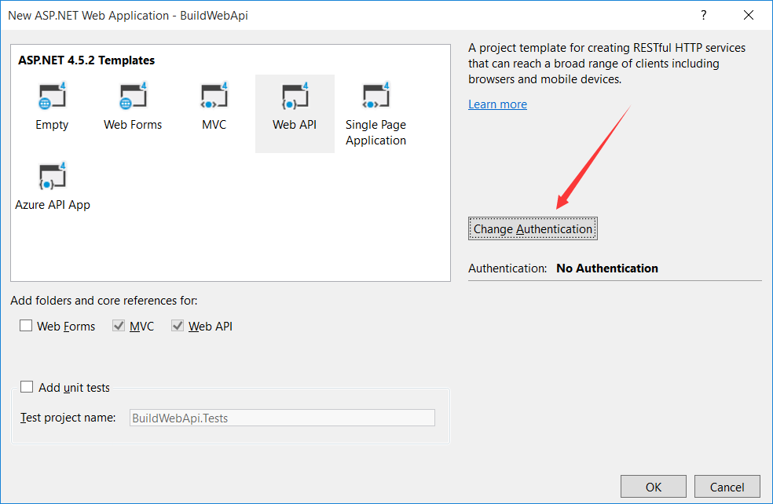
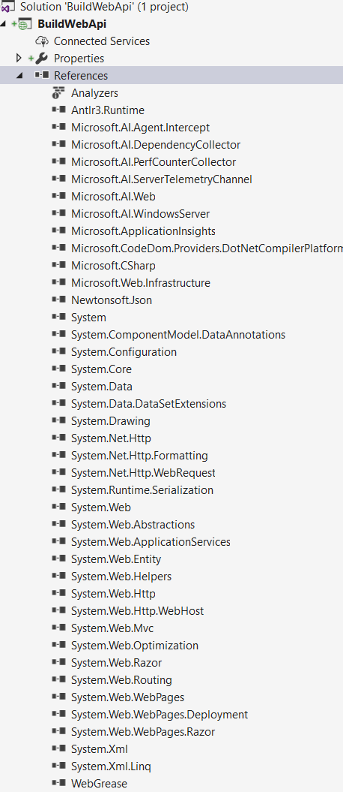
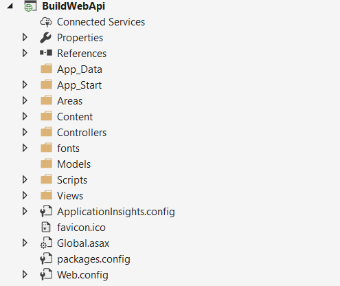
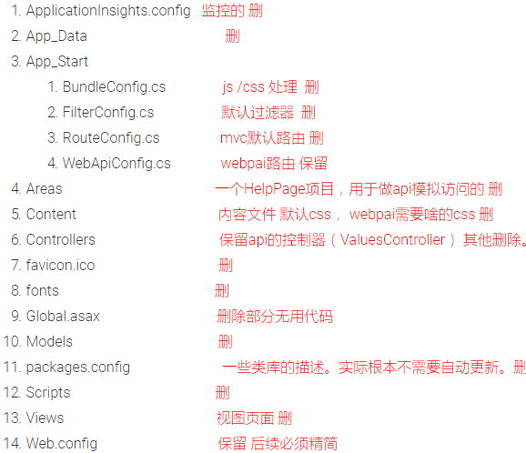
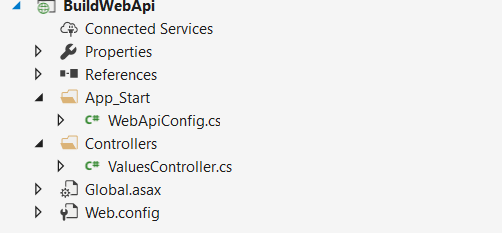
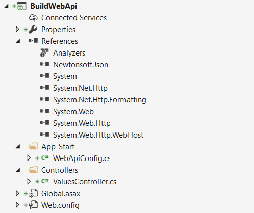
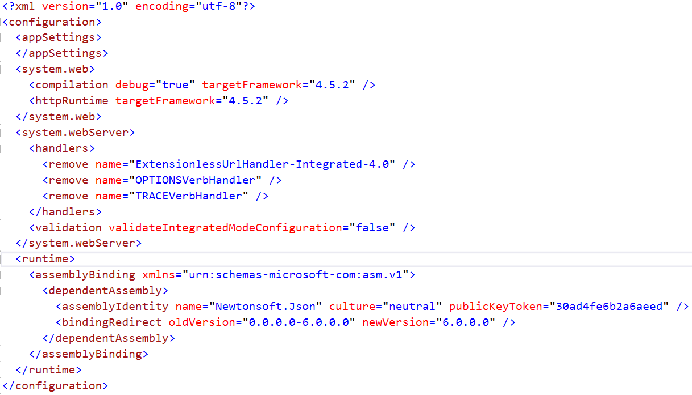
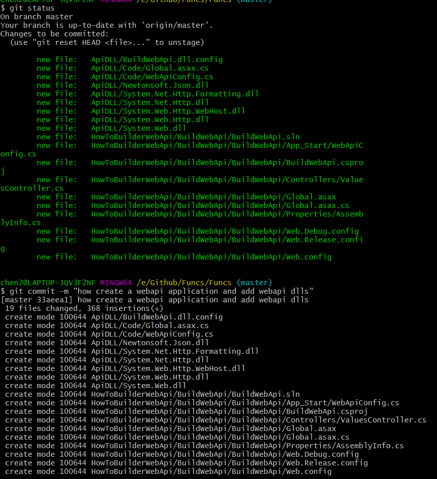
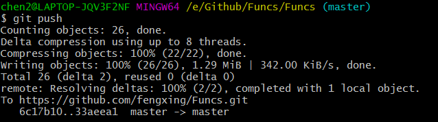

本文告诉你如何创建一个webapi
环境： vs2017
如何创建一个webapi
- 了解webapi项目
- 根据了解的信息，重新定义项目的创建流程
- 优化创建流程
第一步：
先了解下涉及webapi项目的建立
- empty 空的项目,这个项目在你了解了webapi后,就应该使用它
- webforms 早期asp.net的项目，不适合
- mvc 不适合
- mvc+ api 的组合
- single page application spa的页面 有意思。 可以去研究 这里不属于webapi
- azure api app云项目，这里是云的东西+ webapi


- 看了上面类库的作用，是不是觉得微软有点恶心了
- 一堆没用的东西，项目超级“重”
- webapi应该是一个非常棒的概念，结果被微软搞成这样了
- 也不知道微软怎么想，居然还默认自带mvc
- 分离的概念一点都没，虽然有空项目，但是新手够呛
- 老手很多懒的搞，也导致很多人对webapi一知半解
- 甚至感觉和老的东西差不多，不都是后台访问嘛 。
- 这也是本文的意义，重新定义webpai的项目的初衷。
那么我们如何去做呢？
第二步 无用内容文件 必须删删删
项目的内容

还是删除

部分golabl代码，让编译通过，世界一瞬间清净了。

后续必须是删除相关无用的dll.
- 删除css js有关的东西
- 删除编译性的东西
- 删除性能监控
- 删除mvc
- 删除一些系统引用库
- 删除webconfig部分内容
收尾工作 添加一个方便的测试api方法 /Values/Get
WebApiConfig 添加代码
config.Formatters.JsonFormatter.SupportedMediaTypes.Add(new MediaTypeHeaderValue("text/html"));
最后访问地址： http://localhost:59630/values/get


- 是不是世界一瞬间 完全清静了
- 我喜欢这样的webpai,从类库的引用上,非常的清晰明确。
- 基于http协议
- 关联host部分信息
- 最后保留了序列化的库，这个还可以。
webconfig 还可以优化(添加部分代码)，这里后续再说了。
第三步就很简单了 获取有用的类库并保存到一个公用的文件夹
- 复制出bin下的DLL 这里每次编译都多了一个roslyn文件夹 删除，后续在找办法
- 删除网站本身的DLL pdb xml文件
- 重命名网站的BuildWebApi.dll.config 为web.config，并放到文件夹中
- 把上面的类库放在一个独立的文件夹中， 后续就直接引用吧
- 复制Golbal代码文件到文件夹中
- 复制WebApiConfig文件到文件夹中
- 把System.Web.dll复制到文件夹（这个是系统引用）
- 把System.Web.Http.dll复制到文件夹（这个是系统引用）
- 清理项目下的packages文件夹，删除即可。
第四步,也是最后一个步骤
- 创建一个空的项目
- 保留System的引用，删除其他的所有DLL引用
- 引用DLL（可以保留System.Web.dll System.Web.Http.dll）而不引用非系统的类库
- 复制web.config
- 添加配置信息 golabl 相关内容
- 添加文件夹Controllers，在添加相关api控制器 （这是webapi 默认约定）
- 删除默认创建的packages.
- 运行 一切ok
结束！
最后想说下，vs2017的webpai比起vs2015，满意多了，你可以直接建立一个空的webpai项目，少少删除一些类库即可。默认的空项目还是会附带不少类库，删除即可，当然理想状态直接建立一个Blank的项目，在添加一个类库项目，在进行第四步的部分操作。这样就是有点麻烦了，没必要，毕竟删除还是快些。 当然你可以做一个生成WebApi的辅助程序， 一键生成模板 ！！！
最后装逼提交代码,哈哈
后续有空我会上传vs2015的webpai类库引用，家里写写就用VS2017做演示了


结束 ，相关代码可以在这里查看
https://github.com/fengxing/Funcs
https://github.com/fengxing/Funcs/tree/master/HowToBuilderWebApi/BuildWebApi